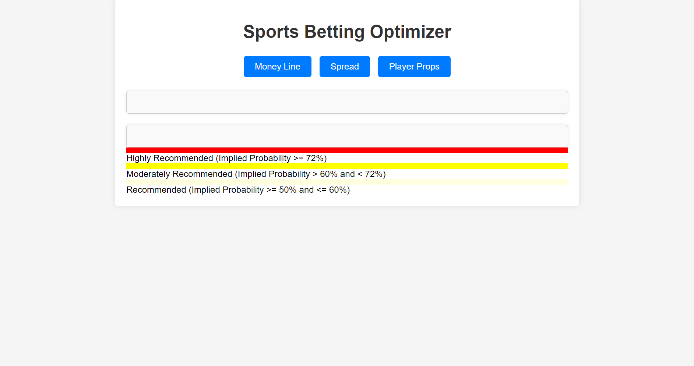
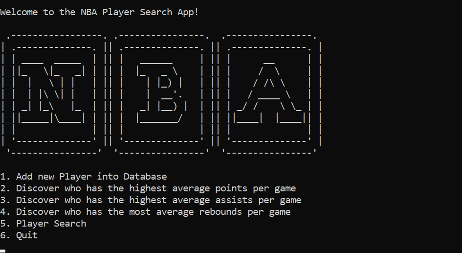

The "SB Optimizer" is a dynamic web application that empowers users to make informed sports betting decisions by providing real-time analysis and recommendations for various betting options. The app offers three main functionalities: Money Line analysis, Spread analysis, and Player Props analysis.

This project demonstrates my proficiency in frontend development, data manipulation, and user experience design. It showcases my ability to create functional and user-centric web applications that deliver valuable insights and help users make informed decisions.

This is a console based java application which uses a custom Red-Black Tree implementation to store and retrieve data about current NBA players.
This project demonstrates my strong Java programming skills, data structure expertise, and ability to create functional applications that provide valuable tools for users to interact with and analyze data efficiently.
WeekAhead is an innovative web application that I designed and developed to help users plan their outdoor activities effectively based on real-time weather forecasts. Through a user-friendly interface created using HTML, CSS, and JavaScript, users can input their desired activity details and receive personalized weather advisories for the next seven days.
As the API subscription can be expensive and I might not always have it active, I apologize for any inconvenience this may cause during your visit. Thank you for understanding.